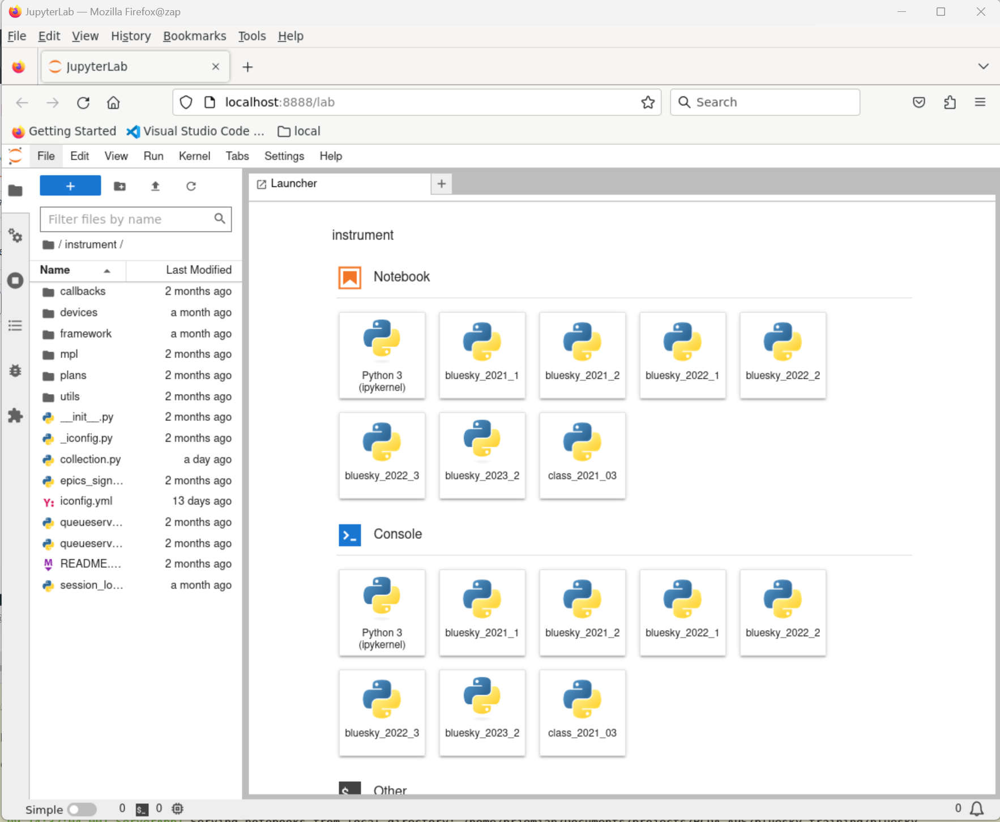

Getting started#
How to start a Bluesky session?#
There are several ways to start a Bluesky session:
IPython console
Jupyter notebook
Bluesky queueserver
background process
unit testing
Some of these may involve loading a specially configured instrument package.
See the
Instrument
section for more details.
In this document, routine startup of an IPython console session and a JupyterLab
notebook session will be demonstrated. The blueskyStarter.sh script was
created to start a Bluesky session for routine data acquisition at beamlines.
It is installed in the ~/bluesky directory. The script may be used from any
shell in any directory to start a bluesky session in IPython console (default)
or Jupyter notebook GUI.
Use blueskyStarter.sh to start a console session#
This next command shows how to start an IPython console session with the
instrument package loaded and ready for data acquisition:
$ blueskyStarter.sh (base) user@host:~$ cd /tmp (base) user@host:/tmp$ blueskyStarter.sh ==> CONDA_PREFIX=/home/user/.conda/envs/bluesky_2023_3 /home/user/.conda/envs/bluesky_2023_3/bin/python -- Python 3.10.10 Python 3.10.10 | packaged by conda-forge | (main, Mar 24 2023, 20:08:06) [GCC 11.3.0] Type 'copyright', 'credits' or 'license' for more information IPython 8.12.0 -- An enhanced Interactive Python. Type '?' for help. IPython profile: bluesky Exception reporting mode: Minimal /home/user/bluesky/instrument/_iconfig.py Activating auto-logging. Current session state plus future input saved. Filename : /tmp/.logs/ipython_console.log ... more lines of output ... I Tue-14:44:57 - #### Startup is complete. #### In [1]:
At this point, the console session is ready for your data acquisition activities.
Use blueskyStarter.sh to start a notebook session#
The next command shows how to start a Jupyter notebook session:
$ blueskyStarter.sh lab ==> CONDA_PREFIX=/home/prjemian/.conda/envs/bluesky_2023_3 Could not activate environment: 'bluesky_2023_3' Installed kernelspec bluesky_2023_3 in /home/prjemian/.local/share/jupyter/kernels/bluesky_2023_3 [I 2023-05-09 14:32:03.687 ServerApp] Package jupyterlab took 0.0000s to import [I 2023-05-09 14:32:03.690 ServerApp] Package jupyter_server_fileid took 0.0022s to import ... more lines of output ...
Shortly, the JupyterLab Launcher will appear in the web browser.

Many of the How-To guides and tutorials, such as the Bluesky cheat
sheet
use a Jupyter notebook for data acquisition with the instrument package.